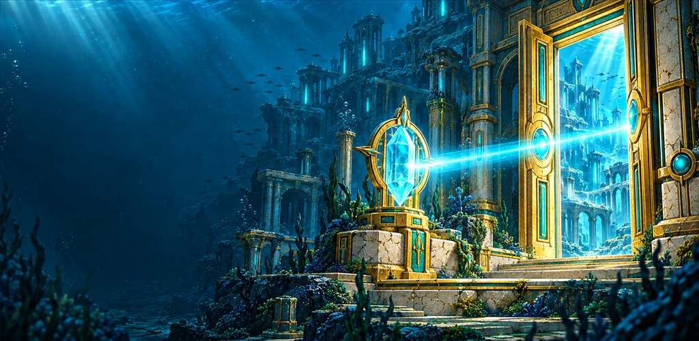
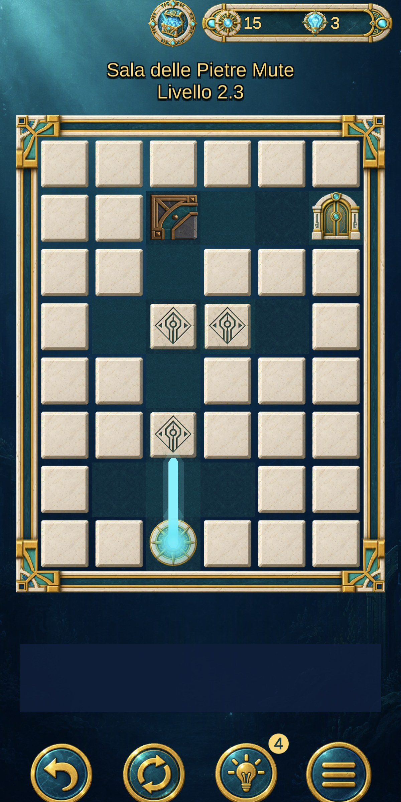
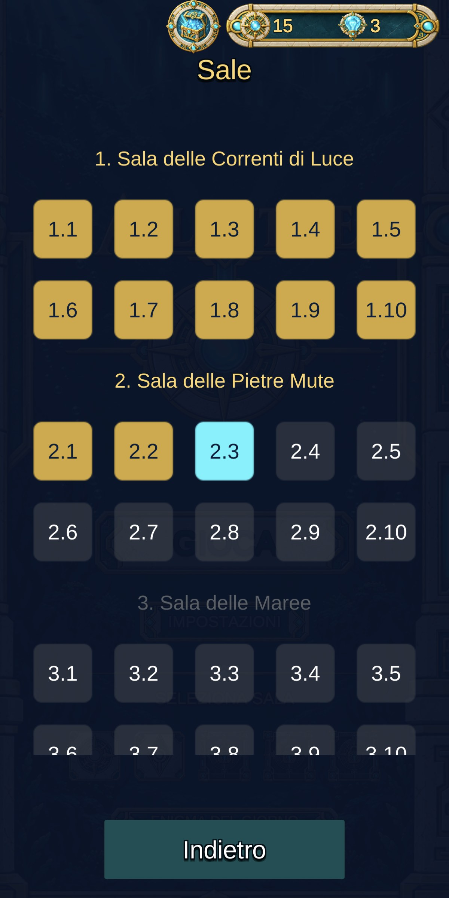

LSGames Studio / Il primo gioco
AtlantideGates of Light
Un puzzle di luce tra cristalli, pietre e prismi.
Trova il percorso dei raggi e riapri le porte della città sommersa.

Dentro il primo gioco
Immagini da Atlantide.
Atlantide: Gates of LightSegui
Segui
la luce.
Cristalli da orientare, percorsi da trovare e porte da raggiungere. Uno sguardo alle sale del gioco.
Vai a Google Play


